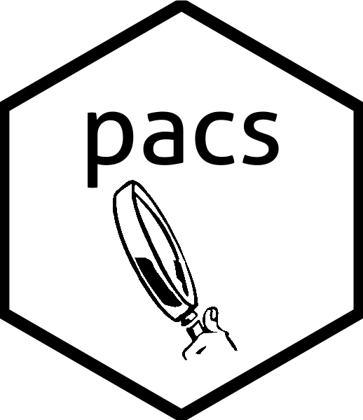

pacs 


For more information please visit the pacs website.
A set of tools that make life easier for developers and maintainers of R packages.
- Validating the library, packages and
renvlock files. - Exploring complexity of a certain package like evaluating its size in bytes with dependencies.
- The shiny app complexity could be explored too.
- Assessing the life duration of a specific package version.
- Checking a CRAN package check page status for any errors and warnings.
- Retrieving a DESCRIPTION or NAMESPACE file for any package version.
- Reporting declared system requirements for a package and its dependencies.
- Comparing DESCRIPTION or NAMESPACE files between different package versions.
- Getting a list of all releases for a specific package.
- The Bioconductor is partly supported.
An Internet connection is required to take full advantage of most of the features.
Bioconductor release dates and R-version mappings come from its official configuration. Historical software-package counts are not provided by that source, so the Software packages column returned by bio_releases() is NA.
Almost all calls which requiring an Internet connection are cached (for 30 minutes) by the memoise package, so the second invocation of the same command (and arguments) is immediate. Restart the R session if you want to clear cached data.
Installation
Development version:
# install.packages("remotes")
remotes::install_github("polkas/pacs")CRAN:
install.packages("pacs")Examples
For more examples with descriptions please visit the walk-through vignette.
Validate the library:
pacs::lib_validate(
checkred = list(
scope = c("ERROR", "FAIL"),
# by default all flavors
flavors = NULL
)
)All package check statuses for all CRAN servers:
pacs::checked_packages()All CRAN releases of a package:
pacs::pac_timemachine("dplyr")Compare package DESCRIPTION file dependencies between versions:
pacs::pac_compare_versions("shiny", "1.0.0", "1.5.0")Looking for heavy dependencies:
pacs::pac_deps_heavy("caret")Report system requirements declared by an installed package and its dependencies:
sysreqs <- pacs::pac_system_requirements("dplyr")
sysreqs |> unlist() |> unique()